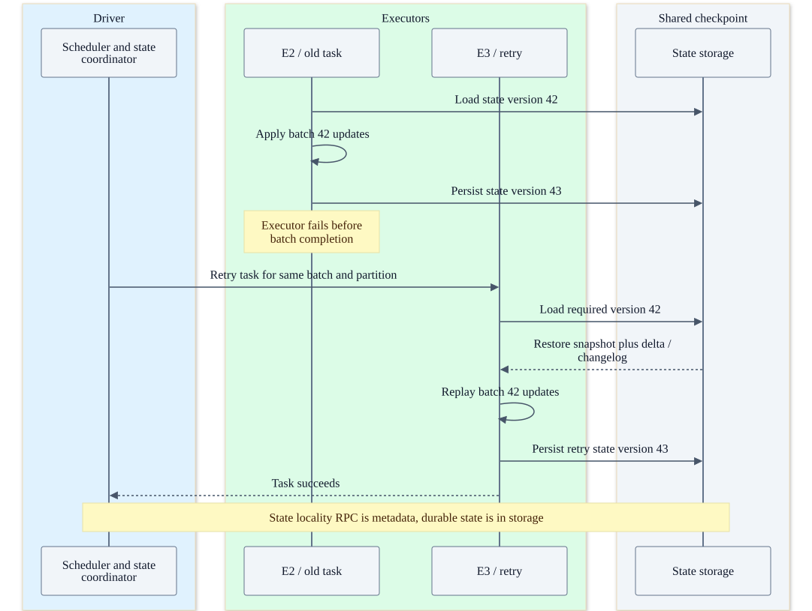
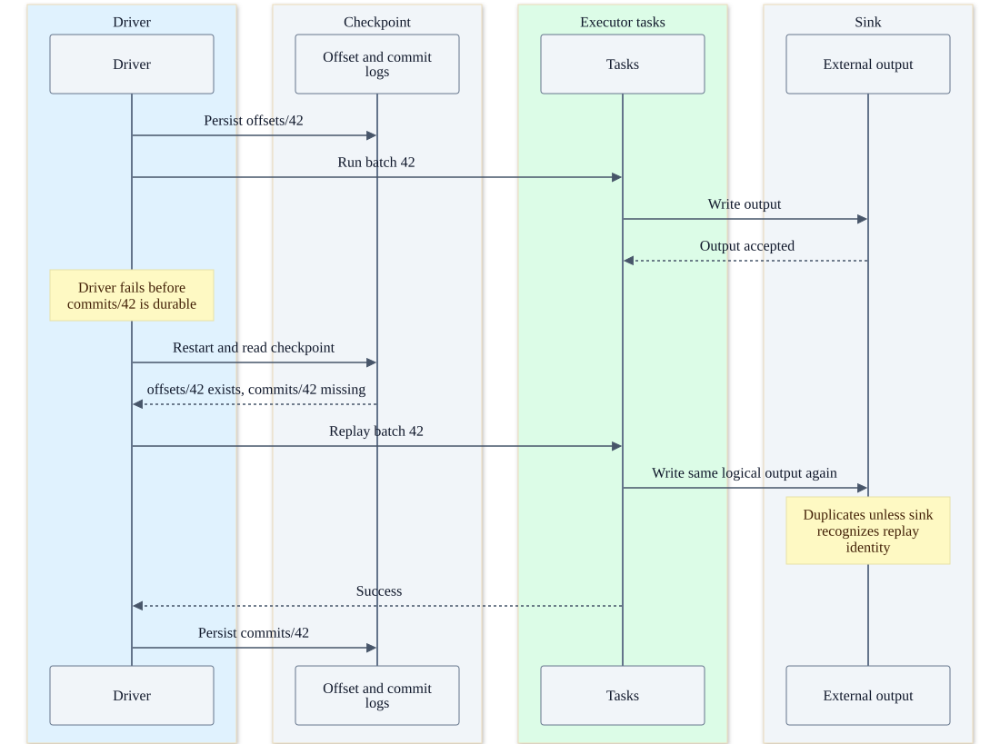
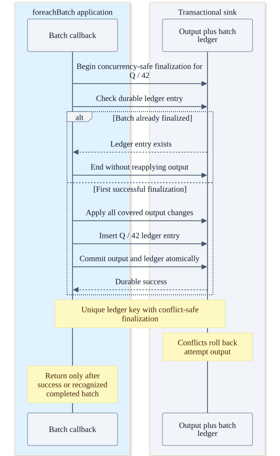

Chapter 26 · Source-backed Spark deep dive
Spark: checkpoints, state and failure recovery
Explain why Kafka group offset commits are unnecessary for this source, how each failure is replayed across executors, and what must hold for retained input and sink effects to survive.
Before the detail
The mental model
The query’s completion log chooses the recovery boundary. A newer state file or successful executor task alone does not complete the whole batch.
Worked example: connect the system view to the code
Batch 42 loads state version 42 and produces version 43. If another task fails and commits/42 is absent, replay needs the state required for batch 42, not whichever state filename is largest. Kafka output from the failed run can already exist.
- Load the required state
IncrementalExecution sets the version for the batch.
- Recover query progress
MicroBatchExecution compares offset and completion logs.
- Understand sink success
KafkaDataWriter flushes sends; this is not an atomic query-log transaction.
Illustrative reasoning example using this chapter's source scope; not a recorded deployment or executed experiment.
Does a stable Kafka output key eliminate replayed append records?
No. Duplicate keys can remain separate log records. Logical deduplication requires an explicit destination or reader policy.
Choose a reading path · Terms and progress boundaries · Clarity review
What recovery can promise, and what it needs
Spark’s Kafka source reads explicit ranges recorded in Spark’s checkpoint. Its source commit(end) is empty, and internal consumers have auto commit disabled. Kafka group offsets are therefore not the recovery ledger for this query.
| Question | Answer in the ordinary synchronous microbatch path |
|---|---|
| How is input progress durable? | offsets/batchId fixes the planned end vector; commits/batchId identifies successful batch completion. |
| What does an executor failure do? | Retry the task/range using the required state version, possibly on a different executor. |
| What does a driver restart do? | Read the same checkpoint, reconcile offset and completion logs, then replay the incomplete batch or begin the next one. |
| Does that avoid skipped input? | Under retained/replayable Kafka input, durable compatible checkpoint/state storage, correct restart and successful execution, failure recovery can replay unfinished input. |
| Does that prevent duplicate output? | Only if the sink provides replay-safe effects through supported manifest, idempotency or atomic finalization. The built-in Kafka sink is at-least-once across Spark replay. |
| What if Kafka has deleted the required records? | A checkpoint stores positions and state, not a copy of all Kafka records. Detection can stop or warn/skip according to policy, but cannot restore deleted input. |
Input preservation depends on all these conditions
These are necessary design conditions, not a proof that every deployment satisfies them. failOnDataLoss=true stops on detected missing offsets; it cannot regenerate records already removed from Kafka.

“No data loss” here concerns recovery of retained input after failures. Query logic can intentionally filter, aggregate, deduplicate or drop late records according to watermarks. That semantic choice should be assessed separately from skipped input caused by failures.
Checkpoint storage: what is inside and who writes it?
A checkpoint directory holds several kinds of evidence
Offsets describe input, state files describe operator state, and commit records identify completed batches. Output durability and any sink deduplication log live in the sink’s own storage.

checkpoint/ illustrative directory shape
metadata persistent query identity
sources/0/0 initial source offsets
offsets/41 end offsets for completed batch 41
offsets/42 planned end offsets for batch 42
commits/41 completion of batch 41
commits/42 exists only after successful batch 42
state/<operator>/<partition>/ versioned state and provider metadata
output/_spark_metadata/ file sink's separate output manifestPaths and serialization depend on source naming and checkpoint format/provider. The tree is illustrative, not a byte-exact checkpoint dump. Newer formats can include source names, checkpoint IDs, state/schema metadata and different version headers. Do not fabricate those fields as always present.
| Artifact | Writer | Meaning |
|---|---|---|
| Source initial-offset metadata | Driver source initialization | Starting vector selected for a fresh source; differs from each later batch boundary. |
| Offset log | Driver before ordinary batch execution | Planned end vector plus batch timing/watermark/session metadata used for replay. |
| Versioned state | Executor state-store provider | Operator-partition data needed by future execution and failed-batch replay. |
| Commit log | Driver after sink success | Completed batch and relevant recovery metadata; not a distributed transaction enclosing all external writes. |
| Sink manifest / batch ledger | Sink implementation or application | Which output is logically finalized, independently of query checkpoint completion. |
HDFSMetadataLog writes via CheckpointFileManager.createAtomic, then closes to publish or cancels on error. The rename-based manager writes a temporary file and renames it to the final name. Compatible storage must satisfy complete-file atomic visibility and durability requirements; a partial final checkpoint file would break the recovery protocol.
The driver and executors must reach the same durable checkpoint storage after replacement. A driver-local ephemeral directory cannot support recovery after that disk disappears. For object storage, use a filesystem/manager implementation with the required semantics; do not assume every rename implementation behaves like an atomic HDFS rename. The inspected manager explicitly warns about non-atomic fallback behavior.
Use one active query owner for a checkpoint and retain checkpoint-compatible source, state and query configuration. Conflict checks prevent certain concurrent log overwrites; they are not a distributed multi-writer application design. Deleting the checkpoint removes the original query’s recovery authority.
State commit, cache loss and executor relocation
Lost executor: reload the required state version elsewhere
Example stateful batch 42. Task attempts can write version 43 before the global batch succeeds. The retry must reconstruct from the required version 42 and the selected checkpoint IDs when enabled.

For batch b, IncrementalExecution supplies state version b; providers produce b+1 after applying the batch. With batch 42, a stateful task reads version 42 and commits version 43. A version-43 artifact may exist before the global batch succeeds.
If the batch later fails, recovery asks for the state corresponding to the required replay boundary, not whichever version filename is largest. The inspected state test commits a later version, evicts the earlier cache, simulates global failure, then reloads the earlier durable state and regenerates the abandoned next version.
| Provider / component | Working state | Durable commit and restore |
|---|---|---|
| HDFSBackedStateStoreProvider | Executor-local versioned maps/cache | Finalize the next delta through atomic checkpoint I/O; load an appropriate snapshot and deltas through the requested version on cache miss. |
| RocksDBStateStoreProvider / RocksDB | Local RocksDB working files on the executor | Persist a remote checkpoint snapshot or durable changelog. Cold recovery reconstructs from remote artifacts. |
| RocksDB changelog mode | Local DB plus changelog tracking | Per-batch changelog commits establish durability; periodic snapshot uploads may run separately. Forced snapshots use the commit path. |
| StateStoreCoordinator | Driver RPC endpoint and active-provider location map | Helps placement and coordination/optional validation; it is not the durable state database. |
| StateStoreRDD | Executor task access plus preferred locations | Build provider identity and load the required operator-partition state on the chosen executor. |
Driver StateStoreCoordinator registers a Spark RPC endpoint. Executors report active provider instances and ask about preferred locations. The driver can lose this in-memory map while the checkpoint state remains intact; restarted providers register again. Do not draw this coordinator as a replicated cluster state topic.
Checkpoint-format caveat: at this pin state format 1 is the default, and numeric state versions are central. Format 2 or later enables state checkpoint IDs, which help identify selected attempts/lineage. State metadata in the query commit log therefore depends on the enabled format. The replay diagrams acknowledge optional IDs rather than showing UUIDs as mandatory fields.
Why asynchronous RocksDB snapshot upload can still be durable
With changelog checkpointing enabled, the batch commit persists its changelog synchronously, while a periodic snapshot may be uploaded asynchronously. Durability follows the durable changelog and valid base snapshot/lineage, rather than waiting for every periodic snapshot. This can reduce commit upload cost but increase cold-restore replay work. Without changelog checkpointing, snapshot checkpoint upload is part of ordinary commit. Local RocksDB files alone cannot survive loss of the executor’s disk.
Driver restart: replay the unfinished batch
Driver restart: compare offsets and commits
Normal synchronous microbatch recovery. The previous offset entry supplies the start vector; the latest planned entry supplies the end vector. Inconsistent or missing required entries can fail recovery.

Worked example: offsets/41 has {120,200,90,50}, and offsets/42 has {180,240,115,70}. If only commits/41 exists, Spark treats 42 as unfinished and reruns those fixed ranges with required prior state. If commits/42 exists, its end vector becomes the next start vector and Spark moves to batch 43.
The new driver also restores captured watermark/session/checkpoint metadata and selected state checkpoint IDs when present. Replaying a completed batch is not the intended normal path. Replaying an unfinished batch is intentional, even if some of its external output already exists.
Executor JVMs remaining alive do not elect a new query driver or advance the query checkpoint themselves. The deployment must restart the driver/query with access to the same checkpoint. Spark task retry, cluster-manager executor replacement and driver application restart are separate recovery actions.
Missing previous offsets, incompatible state metadata or inconsistent log entries can stop recovery. The correct response is to repair or restore a valid supported checkpoint/source state; silently moving to newer offsets can skip input. Changing startingOffsets cannot rewrite the progress of an existing checkpoint.
Failure cases across multiple executors
| Failure point | Durable evidence | Recovery path | Output / availability consequence |
|---|---|---|---|
| Driver before offsets/42 is published | Completed batch 41 remains recorded | Restart and construct the next batch from intact progress | End offsets may be discovered again; no completed 42 is inferred |
| Driver after offsets/42, before tasks | Planned 42 and completed 41 | Restart replays the fixed batch-42 ranges | Extra recovery time, with input preserved if retained |
| Executor during source read / transform | Planned ranges and last durable state | Retry the task on an available executor | Previously issued external side effects can repeat |
| One state task commits 43, another task fails | Some next-state files exist; commits/42 absent | Retry from required version 42 and regenerate next state | A partition state commit does not establish global batch completion |
| Executor with warm state cache disappears | Remote state version remains | Reload snapshot/deltas/changelog on another executor | Cold-load latency and storage bandwidth cost |
| Local shuffle blocks disappear | Source replay boundaries and durable state remain | FetchFailed handling recomputes missing map/stage work under retry limits | Lost local blocks are recomputable work, not durable source progress |
| Partial Kafka/custom sink output then task failure | Some accepted output exists; no global completion | Retry task or unfinished batch | At-least-once effects unless sink protects repeats |
| Sink success then driver loss before commits/42 | Output exists, checkpoint still unfinished | Restart replays 42 | Kafka appends can duplicate; manifest/ledger sinks can recognize prior finalization |
| Driver loss after commits/42 publication | 42 completion exists | Begin 43 from 42 end offsets | Relies on the sink success contract meaning durable completion |
| Checkpoint I/O failure | Last intact files remain; newer external effects may exist | Fail task/query and recover from intact supported progress | Replay window grows; storage availability can stop progress |
| Kafka leader/network failure | Broker replicas plus checkpoint range boundaries | Client leader rediscovery/retries and possibly Spark task retry | Availability pauses; broker durability/retention determine replayability |
| Kafka retention deletes needed input | Checkpoint positions still exist, records do not | Fail on detected loss with true; best-effort warn/skip with false | Missing records cannot be reconstructed by checkpointing |
| Checkpoint deleted or ephemeral storage lost | Recovery authority missing | Fresh-query semantics or restore an external checkpoint backup | Existing query recovery guarantee no longer applies |
| Concurrent/incompatible checkpoint use | Metadata may conflict or no longer fit the plan | Integrity/configuration errors or unsupported recovery | Do not assume a shared checkpoint makes independent queries coordinated |
Retry limits and restart policy matter. A correct replay path does not guarantee infinite availability during permanent storage or network failure. Adequate Kafka retention must cover source backlog plus outage plus recovery/catch-up time, with margin; size-based retention, compaction, topic deletion and disk failure require separate consideration.
failOnDataLoss=true changes the response to detected missing data; it is not a retention mechanism. With false, the reader can move to still-available offsets inside the requested range or return no record if no overlap remains. Gaps caused by control/aborted records should not be confused with proof that every offset integer was a user record.
Sink success and the batch completion gap
Output can succeed before the query commit is durable
This sequence uses a replayable input and a sink that accepts repeats. Recovery preserves input coverage but can duplicate external effects. A sink must provide its own replay-safe behavior for exactly-once results.

| Sink | What its commit means | Replay behavior |
|---|---|---|
| Built-in Kafka streaming sink | Executor sends records, flushes and checks errors; driver commit is empty | Already accepted output can be appended again during task/batch replay. Producer idempotence does not deduplicate new send calls from replay. |
| Streaming file sink | Publish successful task file list in output/_spark_metadata | Skip batches already present in the sink log. Logical append output can be replay-safe with compatible storage and metadata-aware readers. |
| foreachBatch with ordinary external writes | User function returns after whatever it considers success | At-least-once unless destination/application supplies repeat protection; parallel per-partition transactions do not create one global batch transaction. |
| Custom transactional / idempotent sink | Destination recognizes a stable completion identity atomically with effects | Can provide exactly-once effects within that destination’s supported atomicity and concurrency contract. |
| Generic V2 streaming writer | Executor writer messages plus driver commit(epochId,messages) | Connector must implement replay-safe epoch commit; using the interface alone does not supply it. |
| Console / memory | Debug output in console or driver state | Not a durable production sink for end-to-end preservation. |
KafkaDataWriter.write sends rows before its commit(). Commit flushes, checks callback errors and returns a writer message. Abort does not roll those sends back. KafkaStreamingWrite.useCommitCoordinator is false, and its driver commit/abort hooks are empty. A stable Kafka key also does not by itself deduplicate append-log output; repeated sends remain records unless readers or a destination apply a defined deduplication/upsert policy.
Kafka sink durability also depends on producer acknowledgments, topic replication and ISR policy. Spark passes producer options through; flushing an acknowledgment-free send cannot establish durable broker output before the query completion log advances.
Spark’s OutputCommitCoordinator arbitrates task-attempt permission for connectors that use it. It is a driver RPC/in-memory decision, not a durable transaction spanning query logs and sink output. The V2 task path writes rows before asking for commit permission, so the coordinator cannot undo effects already exposed by an incompatible writer. Kafka streaming bypasses that arbitration.
File sink output has a separate persistent manifest. After a completed output batch but a missing query commit, replay checks the manifest and skips the already published batch. Partial tasks can leave physical files, and cleanup is best effort. Metadata-aware readers define the logical output; raw directory globbing can include orphan/unpublished files.
A replay-safe foreachBatch design
Application pattern: output and batch ledger in one transaction
Illustrative foreachBatch sink design, not a built-in Spark transaction. All output changes covered by the ledger must share a supported atomic finalization protocol; ordinary parallel JDBC writes do not automatically share one transaction.

Use a stable query identity and Spark batch ID to identify a batch’s effects. The query’s restart-specific run ID is unsuitable for recognizing the same batch after restart. A destination can apply output and a completion ledger in one transaction, or atomically publish a staged output set associated with that batch.
Illustrative application protocol, not a Spark built-in transaction:
begin destination transaction
enforce unique (stableQueryId, batchId) and concurrency-safe finalization
if ledger contains (stableQueryId, batchId):
finish without applying the same effects again
else:
apply all output covered by this batch identity
insert (stableQueryId, batchId) into durable ledger
atomically commit output plus ledger
on conflicting finalization: roll back all this attempt's output,
then verify the winning attempt's durable completion
return from foreachBatch only after recognized durable successWriting “done” before the output can lose effects on a crash; writing it after output in an unrelated transaction can duplicate them on replay. A driver transaction around a ledger cannot automatically enclose JDBC transactions opened by separate executor tasks. Use a destination-supported staging/finalization scheme, durable per-record idempotency, or another protocol that covers all partial and concurrent attempts.
Do not launch asynchronous writes and return from the callback before their success is known. Do not swallow failures and report successful completion. For stateful plans, consume the required data/state partitions; this pin has eligible state-store commit validation for incomplete foreachBatch execution, but it cannot certify that arbitrary external side effects succeeded.
If a custom callback writes several destinations, finalizing each independently does not supply cross-destination atomicity. Decide which completion identities each destination honors and how partial success is repaired.
Execution modes and presentation memory aids
| Mode | Progress timing | Use this chapter’s timeline? |
|---|---|---|
| Ordinary synchronous microbatch | Chosen offsets before execution; completion after sink success | Yes: the main diagrams are scoped to this path |
| Asynchronous progress tracking | Separate subclass writes progress asynchronously; replay ranges can change after failure | No: this removes the ordinary end-to-end exactly-once model, and this pin rejects stateful queries |
| Continuous processing | Separate continuous execution and epoch coordination | No: do not substitute the microbatch sequence; assess its at-least-once guarantees and supported operators |
| RealTimeTrigger at this pin | Processed offsets gathered from source tasks and logged at batch end; additional state/checkpoint constraints | No: it uses MicroBatchExecution but overrides the ordinary timing and source/shuffle behavior |
During a presentation, point to three durable ledgers: Kafka input records, Spark query/state checkpoint, and sink output/finalization. Then ask where the failure occurs. Executor failure changes a task attempt; driver failure changes the query process; neither should change a recorded unfinished batch’s intended range under ordinary synchronous recovery.
Remember five facts: the driver chooses offset vectors; executors fetch directly; state follows operator partitions; completion logs decide replay; sinks decide whether repeated execution repeats effects. Kafka source commit() is a lifecycle hook with an empty implementation here, while Spark’s checkpoint commits/42 is actual query progress evidence.
Replay requires retained source and valid durable state. Exactly-once effects also require deterministic/compatible replay and sink repeat protection. Spark records certain batch timestamp/watermark metadata, but arbitrary randomness, mutable external lookups and fire-and-forget user code can change results across attempts.
The source/test appendix records what was inspected. Documentation rendering and layout checks were run; Spark engine tests, multi-executor fault injection, example execution and performance benchmarks were not run.
Pinned code, inspected tests and validation scope
Pinned tracked Apache Spark source: f9358a5587a2d512c5cf08ba4b10d60007c93f6e. Untracked experimental share-group files in the supplied checkout are outside this chapter’s scope.
Source and test bodies were inspected. Spark engine tests, executable snippets, performance benchmarks and live multi-executor fault injection were not run. Placements, offsets, directory trees and failure timings are illustrative. Apache source excerpts are licensed under Apache License 2.0.
spk-batch-plan · MicroBatchExecution.scala:979
Source offsets and the need for another stateful batch determine whether to construct a batch.
979 private def constructNextBatch(
980 execCtx: MicroBatchExecutionContext,
981 noDataBatchesEnabled: Boolean): Boolean = withProgressLocked {
982 if (execCtx.isCurrentBatchConstructed) return true
983
984 // Generate a map from each unique source to the next available offset.
985 val (nextOffsets, recentOffsets) = uniqueSources.toSeq.map {
986 case (s: AvailableNowDataStreamWrapper, limit) =>
987 execCtx.updateStatusMessage(s"Getting offsets from $s")
988 val originalSource = s.delegate
989 execCtx.reportTimeTaken("latestOffset") {
990 val next = s.latestOffset(getStartOffset(execCtx, originalSource), limit)
991 val latest = s.reportLatestOffset()
992 ((originalSource, Option(next)), (originalSource, Option(latest)))
993 }
994 case (s: SupportsAdmissionControl, limit) =>
995 execCtx.updateStatusMessage(s"Getting offsets from $s")
996 execCtx.reportTimeTaken("latestOffset") {
997 val next = s.latestOffset(getStartOffset(execCtx, s), limit)
998 val latest = s.reportLatestOffset()
999 ((s, Option(next)), (s, Option(latest)))
1000 }
1001 case (s: Source, _) =>
1002 execCtx.updateStatusMessage(s"Getting offsets from $s")
1003 execCtx.reportTimeTaken("getOffset") {
1004 val offset = s.getOffset
1005 ((s, offset), (s, offset))
1006 }spk-planned-log · MicroBatchExecution.scala:1357
Ordinary synchronous microbatch writes the planned offset log before executing sink work.
1357 protected def markMicroBatchStart(execCtx: MicroBatchExecutionContext): Unit = {
1358
1359 if (!trigger.isInstanceOf[RealTimeTrigger]) {
1360 if (!offsetLog.add(
1361 execCtx.batchId,
1362 execCtx.endOffsets.toOffsets(sources, sourceIdMap, execCtx.offsetSeqMetadata)
1363 )) {
1364 throw QueryExecutionErrors.concurrentStreamLogUpdate(execCtx.batchId)
1365 }
1366
1367 logInfo(
1368 log"Committed offsets for batch ${MDC(LogKeys.BATCH_ID, execCtx.batchId)}. " +
1369 log"Metadata ${MDC(LogKeys.OFFSET_SEQUENCE_METADATA, execCtx.offsetSeqMetadata.toString)}"
1370 )
1371 } else {
1372 logInfo(log"Delay offset logging for batch ${MDC(BATCH_ID, execCtx.batchId)} " +
1373 log"in real time mode.")
1374 }
1375 }
1376
1377 /**
1378 * Method called once after the planning is done and before the start of the microbatch execution.
1379 * It can be used to perform any pre-execution tasks.
1380 */
1381 protected def markMicroBatchExecutionStart(execCtx: MicroBatchExecutionContext): Unit = {}
1382
1383 /**
1384 * Store the state store checkpoint id for a finishing batch to `currentStateStoreCkptId`,spk-retry-consumer · KafkaDataConsumer.scala:845
Reattempts invalidate consumer/fetched-data cache entries to avoid reuse of failed-attempt state.
845 if (TaskContext.get() != null && TaskContext.get().attemptNumber() >= 1) {
846 val cacheKey = new CacheKey(topicPartition, kafkaParams)
847
848 // If this is reattempt at running the task, then invalidate cached consumer if any.
849 consumerPool.invalidateKey(cacheKey)
850
851 // invalidate all fetched data for the key as well
852 // sadly we can't pinpoint specific data and invalidate cause we don't have unique id
853 fetchedDataPool.invalidate(cacheKey)
854 }
855
856 new KafkaDataConsumer(topicPartition, kafkaParams, consumerPool, fetchedDataPool)
857 }
858
859 private[kafka010] def getActiveSizeInConsumerPool(groupIdPrefix: String): Int = {
860 consumerPool.numActiveInGroupIdPrefix(groupIdPrefix)
861 }
862 }
863spk-fetch-failure · DAGScheduler.scala:3886
A missing shuffle block causes scheduler failure handling and appropriate stage re-execution.
spark/core/src/main/scala/org/apache/spark/scheduler/DAGScheduler.scala
3886 case FetchFailed(bmAddress, shuffleId, _, mapIndex, reduceId, failureMessage) =>
3887 val failedStage = stageIdToStage(task.stageId)
3888 val mapStage = shuffleIdToMapStage(shuffleId)
3889
3890 if (failedStage.latestInfo.attemptNumber() != task.stageAttemptId) {
3891 logInfo(log"Ignoring fetch failure from " +
3892 log"${MDC(TASK_ID, task)} as it's from " +
3893 log"${MDC(FAILED_STAGE, failedStage)} attempt " +
3894 log"${MDC(STAGE_ATTEMPT_ID, task.stageAttemptId)} and there is a more recent attempt for " +
3895 log"that stage (attempt " +
3896 log"${MDC(NUM_ATTEMPT, failedStage.latestInfo.attemptNumber())}) running")
3897 } else if (activeJobForStage(failedStage).flatMap(jobIdToActiveJob.get)
3898 .exists(_.hasPipelinedDependency) &&
3899 (isPipelinedGroupMember(failedStage) || isPipelinedGroupMember(mapStage))) {
3900 // Failure is group-atomic for a pipelined group. The base scheduler handles a
3901 // FetchFailed by resubmitting just the map stage in isolation and recomputing serially,
3902 // but a transient pipelined shuffle cannot be re-read and its members are co-scheduled,
3903 // so a lone-stage resubmit is never valid and would deadlock the group. Abort the
3904 // whole group instead: aborting the failed stage tears down its running co-scheduled
3905 // members and fails the job, and the caller (e.g. the streaming batch loop) reruns the
3906 // batch from scratch. This is distinct from the maxTaskFailures=1 lever (which handles
3907 // task failures the TaskSetManager counts): a FetchFailed is NOT counted there (the base
3908 // TaskSetManager marks the task successful and zombies the set), so the routing to group
3909 // failure must be enforced here.
3910 logInfo(log"Failing pipelined group containing ${MDC(FAILED_STAGE, failedStage)} " +
3911 log"(${MDC(FAILED_STAGE_NAME, failedStage.name)}) atomically due to a fetch failure " +
3912 log"from ${MDC(STAGE, mapStage)} (${MDC(STAGE_NAME, mapStage.name)})")
3913 failedStage.failedAttemptIds.add(task.stageAttemptId)spk-state-rdd · StateStoreRDD.scala:80
A state store is identified by checkpoint, operator and state partition; executor placement is separate.
spark/sql/core/src/main/scala/org/apache/spark/sql/execution/streaming/state/StateStoreRDD.scala
80 StateStoreId(checkpointLocation, operatorId, partition.index),
81 queryRunId)
82 }
83 }
84
85 /**
86 * An RDD that allows computations to be executed against [[ReadStateStore]]s. It
87 * uses the [[StateStoreCoordinator]] to get the locations of loaded state stores
88 * and use that as the preferred locations.
89 */
90 class ReadStateStoreRDD[T: ClassTag, U: ClassTag](
91 dataRDD: RDD[T],
92 storeReadFunction: (ReadStateStore, Iterator[T]) => Iterator[U],
93 checkpointLocation: String,
94 queryRunId: UUID,
95 operatorId: Long,
96 storeVersion: Long,
97 stateStoreCkptIds: Option[Array[Array[String]]],
98 stateSchemaBroadcast: Option[StateSchemaBroadcast],
99 keySchema: StructType,
100 valueSchema: StructType,
101 keyStateEncoderSpec: KeyStateEncoderSpec,
102 sessionState: SessionState,
103 @transient private val storeCoordinator: Option[StateStoreCoordinatorRef],
104 useColumnFamilies: Boolean = false,
105 extraOptions: Map[String, String] = Map.empty)
106 extends BaseStateStoreRDD[T, U](dataRDD, checkpointLocation, queryRunId, operatorId,
107 sessionState, storeCoordinator, extraOptions) {spk-state-locality · StateStoreRDD.scala:73
Loaded state providers guide preferred executor placement but are not the durable recovery authority.
spark/sql/core/src/main/scala/org/apache/spark/sql/execution/streaming/state/StateStoreRDD.scala
73 override def getPreferredLocations(partition: Partition): Seq[String] = {
74 val stateStoreProviderId = getStateProviderId(partition)
75 storeCoordinator.flatMap(_.getLocation(stateStoreProviderId)).toSeq
76 }
77
78 protected def getStateProviderId(partition: Partition): StateStoreProviderId = {
79 StateStoreProviderId(
80 StateStoreId(checkpointLocation, operatorId, partition.index),
81 queryRunId)
82 }
83 }
84
85 /**
86 * An RDD that allows computations to be executed against [[ReadStateStore]]s. It
87 * uses the [[StateStoreCoordinator]] to get the locations of loaded state stores
88 * and use that as the preferred locations.
89 */
90 class ReadStateStoreRDD[T: ClassTag, U: ClassTag](
91 dataRDD: RDD[T],
92 storeReadFunction: (ReadStateStore, Iterator[T]) => Iterator[U],
93 checkpointLocation: String,
94 queryRunId: UUID,
95 operatorId: Long,
96 storeVersion: Long,
97 stateStoreCkptIds: Option[Array[Array[String]]],
98 stateSchemaBroadcast: Option[StateSchemaBroadcast],
99 keySchema: StructType,
100 valueSchema: StructType,spk-initial-source · KafkaMicroBatchStream.scala:370
Fresh source initial offsets are chosen once and written to source metadata; existing metadata is reused.
370 private def getOrCreateInitialPartitionOffsets(): PartitionOffsetMap = {
371 // SparkSession is required for getting Hadoop configuration for writing to checkpoints
372 assert(SparkSession.getActiveSession.nonEmpty)
373
374 val metadataLog =
375 new KafkaSourceInitialOffsetWriter(SparkSession.getActiveSession.get, metadataPath)
376 metadataLog.get(0).getOrElse {
377 val offsets = startingOffsets match {
378 case EarliestOffsetRangeLimit =>
379 KafkaSourceOffset(kafkaOffsetReader.fetchEarliestOffsets())
380 case LatestOffsetRangeLimit =>
381 KafkaSourceOffset(kafkaOffsetReader.fetchLatestOffsets(None))
382 case o: SpecificOffsetRangeLimit =>
383 kafkaOffsetReader.fetchSpecificOffsets(o, reportDataLoss)
384 case SpecificTimestampRangeLimit(p, strategy) =>
385 kafkaOffsetReader.fetchSpecificTimestampBasedOffsets(p,
386 isStartingOffsets = true, strategy)
387 case GlobalTimestampRangeLimit(ts, strategy) =>
388 kafkaOffsetReader.fetchGlobalTimestampBasedOffsets(ts,
389 isStartingOffsets = true, strategy)
390 }
391 metadataLog.add(0, offsets)
392 logInfo(log"Initial offsets: ${MDC(OFFSETS, offsets)}")
393 offsets
394 }.partitionToOffsets
395 }
396
397 /** Proportionally distribute limit number of offsets among topicpartitions */spk-no-kafka-commit · KafkaMicroBatchStream.scala:339
The Kafka V2 source commit lifecycle hook does not commit Kafka group offsets.
339 override def commit(end: Offset): Unit = {}
340
341 override def stop(): Unit = {
342 kafkaOffsetReader.close()
343 }
344
345 override def toString(): String = s"KafkaV2[$kafkaOffsetReader]"
346
347 override def metrics(latestConsumedOffset: Optional[Offset]): ju.Map[String, String] = {
348 val reCalculatedLatestPartitionOffsets =
349 if (inRealTimeMode) {
350 if (!latestConsumedOffset.isPresent) {
351 // this means a batch has no end offsets, which should not happen
352 None
353 } else {
354 Some {
355 kafkaOffsetReader.fetchLatestOffsets(
356 Some(latestConsumedOffset.get.asInstanceOf[KafkaSourceOffset].partitionToOffsets))
357 }
358 }
359 } else {
360 Option(latestPartitionOffsets)
361 }
362
363 KafkaMicroBatchStream.metrics(latestConsumedOffset, reCalculatedLatestPartitionOffsets)
364 }
365
366 /**spk-v1-commit · Source.scala:67
V1 Source supplies an empty ordinary source-commit callback; KafkaSource does not add a group-offset commit.
spark/sql/core/src/main/scala/org/apache/spark/sql/execution/streaming/Source.scala
67 def commit(end: Offset) : Unit = {}
68
69 override def initialOffset(): OffsetV2 = {
70 throw new IllegalStateException("should not be called.")
71 }
72
73 override def deserializeOffset(json: String): OffsetV2 = {
74 throw new IllegalStateException("should not be called.")
75 }
76
77 override def commit(end: OffsetV2): Unit = {
78 throw new IllegalStateException("should not be called.")
79 }
80 }
81spk-kafka-config · KafkaSourceProvider.scala:335
Kafka source rejects user auto-commit configuration and disables internal auto commit.
335 ConsumerConfig.ENABLE_AUTO_COMMIT_CONFIG, // committing correctly requires new APIs in Source
336 ConsumerConfig.INTERCEPTOR_CLASSES_CONFIG) // interceptors can modify payload, so not safe
337
338 otherUnsupportedConfigs.foreach { c =>
339 if (params.contains(s"kafka.$c")) {
340 throw new IllegalArgumentException(s"Kafka option '$c' is not supported")
341 }
342 }
343
344 if (!params.contains(s"kafka.${ConsumerConfig.BOOTSTRAP_SERVERS_CONFIG}")) {
345 throw new IllegalArgumentException(
346 s"Option 'kafka.${ConsumerConfig.BOOTSTRAP_SERVERS_CONFIG}' must be specified for " +
347 s"configuring Kafka consumer")
348 }
349
350 if (params.contains(MIN_OFFSET_PER_TRIGGER) && params.contains(MAX_OFFSET_PER_TRIGGER)) {
351 val minOffsets = params.get(MIN_OFFSET_PER_TRIGGER).get.toLong
352 val maxOffsets = params.get(MAX_OFFSET_PER_TRIGGER).get.toLong
353 if (minOffsets > maxOffsets) {
354 throw new IllegalArgumentException(s"The value of minOffsetPerTrigger($minOffsets) is " +
355 s"higher than the maxOffsetsPerTrigger($maxOffsets).")
356 }
357 }
358 }
359
360 private def validateStreamOptions(params: CaseInsensitiveMap[String]) = {
361 // Stream specific options
362 params.get(ENDING_OFFSETS_OPTION_KEY).map(_ =>spk-producer-options · KafkaSourceProvider.scala:788
The Kafka sink passes user producer parameters through and sets serializers; acknowledgments and broker durability policy remain deployment choices.
788 private[kafka010] def kafkaParamsForProducer(
789 params: CaseInsensitiveMap[String]): ju.Map[String, Object] = {
790 if (params.contains(s"kafka.${ProducerConfig.KEY_SERIALIZER_CLASS_CONFIG}")) {
791 throw new IllegalArgumentException(
792 s"Kafka option '${ProducerConfig.KEY_SERIALIZER_CLASS_CONFIG}' is not supported as keys "
793 + "are serialized with ByteArraySerializer.")
794 }
795
796 if (params.contains(s"kafka.${ProducerConfig.VALUE_SERIALIZER_CLASS_CONFIG}")) {
797 throw new IllegalArgumentException(
798 s"Kafka option '${ProducerConfig.VALUE_SERIALIZER_CLASS_CONFIG}' is not supported as "
799 + "value are serialized with ByteArraySerializer.")
800 }
801
802 val specifiedKafkaParams = convertToSpecifiedParams(params)
803
804 KafkaConfigUpdater("executor", specifiedKafkaParams)
805 .set(ProducerConfig.KEY_SERIALIZER_CLASS_CONFIG, serClassName)
806 .set(ProducerConfig.VALUE_SERIALIZER_CLASS_CONFIG, serClassName)
807 .build()
808 }
809
810 private def convertToSpecifiedParams(parameters: Map[String, String]): Map[String, String] = {
811 // Optional operator-configured denylist of Kafka client option names (without the "kafka."
812 // prefix). Empty by default, which allows every option and preserves the previous behavior.
813 val disallowed = SQLConf.get.getConf(StaticSQLConf.KAFKA_DISALLOWED_OPTIONS)
814 .map(_.toLowerCase(Locale.ROOT)).toSet
815 val stripped = parametersspk-query-identity · StreamExecution.scala:188
Query identity comes from checkpoint metadata, whereas runId is randomly generated for a new run.
spark/sql/core/src/main/scala/org/apache/spark/sql/execution/streaming/runtime/StreamExecution.scala
188 override val id: UUID = UUID.fromString(streamMetadata.id)
189
190 override val runId: UUID = UUID.randomUUID
191
192 protected val progressReporter = new ProgressReporter(sparkSession, triggerClock,
193 () => logicalPlan)
194
195 /**
196 * Pretty identified string of printing in logs. Format is
197 * If name is set "queryName [id = xyz, runId = abc]" else "[id = xyz, runId = abc]"
198 */
199 protected val prettyIdString =
200 Option(name).map(_ + " ").getOrElse("") + s"[id = $id, runId = $runId]"
201
202 /**
203 * A list of unique sources in the query plan. This will be set when generating logical plan.
204 */
205 @volatile protected var uniqueSources: Map[SparkDataStream, ReadLimit] = Map.empty
206
207 /** Defines the internal state of execution */
208 protected val state = new AtomicReference[State](INITIALIZING)
209
210 def lastExecution: IncrementalExecution = getLatestExecutionContext().executionPlan
211
212 @volatile
213 protected var streamDeathCause: StreamingQueryException = null
214
215 /* Get the call site in the caller thread; will pass this into the micro batch thread */spk-batch-sink · MicroBatchExecution.scala:1327
The driver executes the sink and awaits the required work before writing the query completion log.
1327 s.addBatch(execCtx.batchId, nextBatch)
1328 // DSv2 write node has a mechanism to invalidate DSv2 relation, but there is no
1329 // corresponding one for DSv1. Given we have an information of catalog table for sink,
1330 // we can refresh the catalog table once the write has succeeded.
1331 plan.catalogTable.foreach { tbl =>
1332 sparkSession.catalog.refreshTable(tbl.identifier.quotedString)
1333 }
1334 case _: SupportsWrite =>
1335 // This doesn't accumulate any data - it just forces execution of the microbatch writer.
1336 nextBatch.collect()
1337 }
1338 execCtx.executionPlan.executedPlan match {
1339 case w: WriteToDataSourceV2Exec => w.commitProgress
1340 case _ => None
1341 }
1342 }
1343 }
1344
1345 withProgressLocked {
1346 execCtx.sinkCommitProgress = batchSinkProgress
1347 markMicroBatchEnd(execCtx)
1348 }
1349 logDebug(s"Completed batch ${execCtx.batchId}")
1350 }
1351
1352
1353 /**
1354 * Called at the start of the micro batch with given offsets. It takes care of offsetspk-batch-complete · MicroBatchExecution.scala:1558
After sink success, markMicroBatchEnd publishes query completion metadata and advances committed offsets.
1558 if (!commitLog.add(execCtx.batchId, metadata)) {
1559 throw QueryExecutionErrors.concurrentStreamLogUpdate(execCtx.batchId)
1560 }
1561 }
1562 signalProcessAllAvailableIfRealTimeMode(execCtx)
1563 committedOffsets ++= execCtx.endOffsets
1564 }
1565
1566 /**
1567 * When running in RealTimeTrigger mode, this method extracts the end offsets after the current
1568 * batch has finished execution and writes them to the execution context. In real-time mode the
1569 * end offsets are not known up front; they are gathered from all [[RealTimeStreamScanExec]]
1570 * nodes (i.e. tasks that execute a source partition), merged, and recorded on the context so
1571 * they can subsequently be written to the offset log.
1572 */
1573 protected def populateBatchOffsetsForRTM(execCtx: MicroBatchExecutionContext): Unit = {
1574 assert(trigger.isInstanceOf[RealTimeTrigger])
1575
1576 val execs = StreamingQueryPlanTraverseHelper
1577 .collectFromUnfoldedPlan(lastExecution.executedPlan) {
1578 case e: RealTimeStreamScanExec => e
1579 }
1580
1581 val endOffsetMap = MutableMap[SparkDataStream, OffsetV2]()
1582 execs.foreach { e =>
1583 val lowLatencyExec = e.asInstanceOf[RealTimeStreamScanExec]
1584 val accus: Seq[PartitionOffsetWithIndex] =
1585 lowLatencyExec.endOffsetsAccumulator.value.asScala.toSeqspk-driver-recovery · MicroBatchExecution.scala:808
Recovery compares planned and completed batch logs to replay the latest incomplete batch or advance.
808 protected def populateStartOffsets(
809 execCtx: MicroBatchExecutionContext,
810 sparkSessionToRunBatches: SparkSession): Unit = {
811 execCtx.sinkCommitProgress = None
812 offsetLog.getLatest() match {
813 case Some((latestBatchId, nextOffsets)) =>
814 /* First assume that we are re-executing the latest known batch
815 * in the offset log */
816 execCtx.batchId = latestBatchId
817 execCtx.isCurrentBatchConstructed = true
818 execCtx.endOffsets = nextOffsets.toStreamProgress(sources, sourceIdMap)
819
820 // validate the integrity of offset log and get the previous offset from the offset log
821 val secondLatestOffsets = validateOffsetLogAndGetPrevOffset(latestBatchId)
822 secondLatestOffsets.foreach { offset =>
823 execCtx.startOffsets = offset.toStreamProgress(sources, sourceIdMap)
824 }
825
826 // update offset metadata
827 nextOffsets.metadataOpt.foreach { metadata =>
828 OffsetSeqMetadata.setSessionConf(metadata, sparkSessionToRunBatches.sessionState.conf)
829 execCtx.offsetSeqMetadata = OffsetSeqMetadata(
830 metadata.batchWatermarkMs, metadata.batchTimestampMs, sparkSessionToRunBatches.conf)
831 watermarkTracker = WatermarkTracker(sparkSessionToRunBatches.conf, logicalPlan)
832 watermarkTracker.setWatermark(metadata.batchWatermarkMs)
833 }
834
835 /* identify the current batch id: if commit log indicates we successfully processed thespk-log-atomic · HDFSMetadataLog.scala:208
Batch metadata publication uses the configured checkpoint file manager atomic-write contract.
208 val output = fileManager.createAtomic(batchMetadataFile, overwriteIfPossible = false)
209 try {
210 fn(output)
211 output.close()
212 } catch {
213 case e: FileAlreadyExistsException =>
214 output.cancel()
215 // If next batch file already exists, then another concurrently running query has
216 // written it.
217 throw QueryExecutionErrors.multiStreamingQueriesUsingPathConcurrentlyError(path, e)
218 case e: Throwable =>
219 output.cancel()
220 throw e
221 }
222 }
223
224 /**
225 * Store the metadata for the specified batchId and return `true` if successful. This method
226 * fills the content of metadata via executing function. If the function throws an exception,
227 * writing will be automatically cancelled and this method will propagate the exception.
228 *
229 * If the batchId's metadata has already been stored, this method will return `false`.
230 *
231 * Writing the metadata is done by writing a batch to a temp file then rename it to the batch
232 * file.
233 *
234 * There may be multiple [[HDFSMetadataLog]] using the same metadata path. Although it is not a
235 * valid behavior, we still need to prevent it from destroying the files.spk-file-manager · CheckpointFileManager.scala:66
The file manager requires complete-file atomic visibility with close or cancellation semantics.
66 def createAtomic(path: Path, overwriteIfPossible: Boolean): CancellableFSDataOutputStream
67
68 /** Open a file for reading, or throw exception if it does not exist. */
69 def open(path: Path): FSDataInputStream
70
71 /** List the files/directories in a path that match a filter. */
72 def list(path: Path, filter: PathFilter): Array[FileStatus]
73
74 /** List all the files/directories in a path. */
75 def list(path: Path): Array[FileStatus] = {
76 list(path, (_: Path) => true)
77 }
78
79 /** Make directory at the give path and all its parent directories as needed. */
80 def mkdirs(path: Path): Unit
81
82 /** Whether path exists */
83 def exists(path: Path): Boolean
84
85 /** Recursively delete a path if it exists. Should not throw exception if file doesn't exist. */
86 def delete(path: Path): Unit
87
88 /** Is the default file system this implementation is operating on the local file system. */
89 def isLocal: Boolean
90
91 /**
92 * Creates the checkpoint path if it does not exist, and returns the qualified
93 * checkpoint path.spk-rename-manager · CheckpointFileManager.scala:155
The rename-based stream closes the temporary output and publishes it as the final checkpoint file.
155 override def close(): Unit = synchronized {
156 try {
157 if (terminated) return
158 underlyingStream.close()
159 try {
160 fm.renameTempFile(tempPath, finalPath, overwriteIfPossible)
161 } catch {
162 case fe: FileAlreadyExistsException =>
163 logWarning(log"Failed to rename temp file ${MDC(TEMP_PATH, tempPath)} to " +
164 log"${MDC(PATH, finalPath)} because file exists", fe)
165 if (!overwriteIfPossible) throw fe
166 }
167
168 // Optionally, check if the renamed file exists
169 if (SQLConf.get.checkpointRenamedFileCheck && !fm.exists(finalPath)) {
170 throw new IllegalStateException(s"Renamed temp file $tempPath to $finalPath. " +
171 s"But $finalPath does not exist.")
172 }
173
174 logInfo(log"Renamed temp file ${MDC(TEMP_PATH, tempPath)} to " +
175 log"${MDC(FINAL_PATH, finalPath)}")
176 } finally {
177 terminated = true
178 }
179 }
180
181 override def cancel(): Unit = synchronized {
182 try {spk-kafka-send · KafkaWriteTask.scala:115
Kafka output sends happen during executor row processing, before Spark task completion.
spark/connector/kafka-0-10-sql/src/main/scala/org/apache/spark/sql/kafka010/KafkaWriteTask.scala
115 producer.send(record, callback)
116 }
117
118 protected def checkForErrors(): Unit = {
119 if (failedWrite != null) {
120 throw failedWrite
121 }
122 }
123
124 private def createProjection = {
125 UnsafeProjection.create(
126 Seq(
127 KafkaWriter.topicExpression(inputSchema, topic),
128 Cast(KafkaWriter.keyExpression(inputSchema), BinaryType),
129 Cast(KafkaWriter.valueExpression(inputSchema), BinaryType),
130 KafkaWriter.headersExpression(inputSchema),
131 KafkaWriter.partitionExpression(inputSchema)
132 ),
133 inputSchema
134 )
135 }
136 }
137
138spk-kafka-task-commit · KafkaDataWriter.scala:58
Kafka task writer flushes and checks errors; abort is empty and does not roll back records.
spark/connector/kafka-0-10-sql/src/main/scala/org/apache/spark/sql/kafka010/KafkaDataWriter.scala
58 def commit(): WriterCommitMessage = {
59 // Send is asynchronous, but we can't commit until all rows are actually in Kafka.
60 // This requires flushing and then checking that no callbacks produced errors.
61 // We also check for errors before to fail as soon as possible - the check is cheap.
62 checkForErrors()
63 producer.foreach(_.producer.flush())
64 checkForErrors()
65 KafkaDataWriterCommitMessage
66 }
67
68 def abort(): Unit = {}
69
70 def close(): Unit = {
71 producer.foreach(InternalKafkaProducerPool.release)
72 producer = None
73 }
74 }
75spk-kafka-driver-commit · KafkaStreamingWrite.scala:49
Kafka streaming bypasses Spark task commit arbitration and its driver commit hook is empty.
49 override def useCommitCoordinator(): Boolean = false
50
51 override def commit(epochId: Long, messages: Array[WriterCommitMessage]): Unit = {}
52 override def abort(epochId: Long, messages: Array[WriterCommitMessage]): Unit = {}
53 }
54
55 /**
56 * A [[StreamingDataWriterFactory]] for Kafka writing. Will be serialized and sent to executors to
57 * generate the per-task data writers.
58 * @param topic The topic that should be written to. If None, topic will be inferred from
59 * a `topic` field in the incoming data.
60 * @param producerParams Parameters for Kafka producers in each task.
61 * @param schema The schema of the input data.
62 */
63 private case class KafkaStreamWriterFactory(
64 topic: Option[String],
65 producerParams: ju.Map[String, Object],
66 schema: StructType)
67 extends StreamingDataWriterFactory {
68
69 override def createWriter(
70 partitionId: Int,
71 taskId: Long,
72 epochId: Long): DataWriter[InternalRow] = {
73 new KafkaDataWriter(topic, producerParams, DataTypeUtils.toAttributes(schema))
74 }
75 }
76spk-writer-authorization · WriteToDataSourceV2Exec.scala:697
Rows are written before optional task commit authorization; authorization cannot undo earlier external effects.
697 write(dataWriter, iterWithMetrics)
698
699 CustomMetrics.updateMetrics(
700 dataWriter.currentMetricsValues.toImmutableArraySeq, customMetrics)
701
702 val msg = if (useCommitCoordinator) {
703 val coordinator = SparkEnv.get.outputCommitCoordinator
704 val commitAuthorized = coordinator.canCommit(stageId, stageAttempt, partId, attemptId)
705 if (commitAuthorized) {
706 logInfo(log"Commit authorized for partition ${MDC(LogKeys.PARTITION_ID, partId)} " +
707 log"(task ${MDC(LogKeys.TASK_ID, taskId)}, " +
708 log"attempt ${MDC(LogKeys.TASK_ATTEMPT_ID, attemptId)}, " +
709 log"stage ${MDC(LogKeys.STAGE_ID, stageId)}." +
710 log"${MDC(LogKeys.STAGE_ATTEMPT_ID, stageAttempt)})")
711
712 dataWriter.commit()
713 } else {
714 val commitDeniedException = QueryExecutionErrors.commitDeniedError(
715 partId, taskId, attemptId, stageId, stageAttempt)
716 logInfo(log"${MDC(LogKeys.ERROR, commitDeniedException.getMessage)}")
717 // throwing CommitDeniedException will trigger the catch block for abort
718 throw commitDeniedException
719 }
720
721 } else {
722 logInfo(log"Writer for partition ${MDC(LogKeys.PARTITION_ID, context.partitionId())} " +
723 log"is committing.")
724 dataWriter.commit()spk-commit-arbitration · OutputCommitCoordinator.scala:100
The driver arbitrates task-attempt commit permission; this is not a durable transaction with the query checkpoint.
spark/core/src/main/scala/org/apache/spark/scheduler/OutputCommitCoordinator.scala
100 val msg = AskPermissionToCommitOutput(stage, stageAttempt, partition, attemptNumber)
101 coordinatorRef match {
102 case Some(endpointRef) =>
103 ThreadUtils.awaitResult(endpointRef.ask[Boolean](msg),
104 RpcUtils.askRpcTimeout(conf).duration)
105 case None =>
106 logError(
107 "canCommit called after coordinator was stopped (is SparkEnv shutdown in progress)?")
108 false
109 }
110 }
111
112 /**
113 * Called by the DAGScheduler when a stage starts. Initializes the stage's state if it hasn't
114 * yet been initialized.
115 *
116 * @param stage the stage id.
117 * @param maxPartitionId the maximum partition id that could appear in this stage's tasks (i.e.
118 * the maximum possible value of `context.partitionId`).
119 */
120 private[scheduler] def stageStart(stage: Int, maxPartitionId: Int): Unit = synchronized {
121 stageStates.get(stage) match {
122 case Some(state) =>
123 require(state.authorizedCommitters.length == maxPartitionId + 1)
124 logInfo(log"Reusing state from previous attempt of stage ${MDC(LogKeys.STAGE_ID, stage)}")
125
126 case _ =>
127 stageStates(stage) = new StageState(maxPartitionId + 1)spk-file-sink · FileStreamSink.scala:154
The file sink can skip output batches already present in its durable sink manifest log.
spark/sql/core/src/main/scala/org/apache/spark/sql/execution/streaming/sinks/FileStreamSink.scala
154 if (batchId <= fileLog.getLatestBatchId().getOrElse(-1L)) {
155 logInfo(log"Skipping already committed batch ${MDC(BATCH_ID, batchId)}")
156 } else {
157 val committer = FileCommitProtocol.instantiate(
158 className = sparkSession.sessionState.conf.streamingFileCommitProtocolClass,
159 jobId = batchId.toString,
160 outputPath = path)
161
162 committer match {
163 case manifestCommitter: ManifestFileCommitProtocol =>
164 manifestCommitter.setupManifestOptions(fileLog, batchId)
165 case _ => // Do nothing
166 }
167
168 // Get the actual partition columns as attributes after matching them by name with
169 // the given columns names.
170 val partitionColumns: Seq[Attribute] = partitionColumnNames.map { col =>
171 val nameEquality = data.sparkSession.sessionState.conf.resolver
172 data.logicalPlan.output.find(f => nameEquality(f.name, col)).getOrElse {
173 throw QueryExecutionErrors.partitionColumnNotFoundInSchemaError(col, data.schema)
174 }
175 }
176 val qe = data.queryExecution
177
178 FileFormatWriter.write(
179 sparkSession = sparkSession,
180 plan = qe.executedPlan,
181 fileFormat = fileFormat,spk-file-manifest · ManifestFileCommitProtocol.scala:78
Successful task output files become published logical output through the file sink batch manifest.
78 if (fileLog.add(batchId, fileStatuses)) {
79 logInfo(log"Committed batch ${MDC(BATCH_ID, batchId)}")
80 } else {
81 // Reaching here means `fileLog.add` found this batchId already committed to the sink
82 // metadata log at `path`. This is almost always two concurrent streaming queries writing
83 // to the same output path: they share a single `_spark_metadata` log and cannot coexist.
84 // Log the path + batchId at ERROR so a recurrence in scheduled jobs is diagnosable from the
85 // logs alone, without re-reproducing the race.
86 // Build the message once and reuse it for both the log and the exception so they stay in
87 // sync (see review on SPARK-57651).
88 val errorMsg = log"Race while writing batch ${MDC(BATCH_ID, batchId)} to the file sink " +
89 log"metadata log at ${MDC(PATH, path)}: another writer already committed this batch. " +
90 log"This usually means multiple concurrent streaming queries are writing to the same " +
91 log"output path (they share one _spark_metadata log)."
92 logError(errorMsg)
93 throw new IllegalStateException(errorMsg.message)
94 }
95 }
96
97 override def abortJob(jobContext: JobContext): Unit = {
98 require(fileLog != null, "setupManifestOptions must be called before this function")
99 // Best effort cleanup of complete files from failed job.
100 // Since the file has UUID in its filename, we are safe to try deleting them
101 // as the file will not conflict with file with another attempt on the same task.
102 if (pendingCommitFiles.nonEmpty) {
103 pendingCommitFiles.foreach { path =>
104 try {
105 val fs = path.getFileSystem(jobContext.getConfiguration)spk-foreach-batch · ForeachBatchSink.scala:49
User code receives the Dataset and batch ID and supplies the destination success/transaction contract.
49 callBatchWriter(ds, batchId)
50 }
51
52 override def toString(): String = "ForeachBatchSink"
53
54 private def callBatchWriter(ds: Dataset[T], batchId: Long): Unit = {
55 try {
56 batchWriter(ds, batchId)
57 } catch {
58 // The user code can throw any type of exception.
59 case NonFatal(e) if !e.isInstanceOf[SparkThrowable] =>
60 throw ForeachBatchUserFuncException(e)
61 }
62 }
63 }
64
65 /**
66 * Exception that wraps the exception thrown in the user provided function in ForeachBatch sink.
67 */
68 private[sql] case class ForeachBatchUserFuncException(cause: Throwable)
69 extends SparkException(
70 errorClass = "FOREACH_BATCH_USER_FUNCTION_ERROR",
71 messageParameters = Map("reason" -> Option(cause.getMessage).getOrElse("")),
72 cause = cause)
73
74 /**
75 * Interface that is meant to be extended by Python classes via Py4J.
76 * Py4J allows Python classes to implement Java interfaces so that the JVM can call backspk-data-loss · KafkaMicroBatchStream.scala:442
Detected missing source data throws when failOnDataLoss is enabled and logs otherwise; deleted input is not recreated.
442 private def reportDataLoss(message: String, getException: () => Throwable): Unit = {
443 if (failOnDataLoss) {
444 throw getException()
445 } else {
446 logWarning(log"${MDC(ERROR, message)}. ${MDC(TIP, INSTRUCTION_FOR_FAIL_ON_DATA_LOSS_FALSE)}")
447 }
448 }
449
450 private def verifyEndOffsetForTriggerAvailableNow(
451 endPartitionOffsets: Map[TopicPartition, Long]): Unit = {
452 val tpsForPrefetched = allDataForTriggerAvailableNow.keySet
453 val tpsForEndOffset = endPartitionOffsets.keySet
454
455 if (tpsForPrefetched != tpsForEndOffset) {
456 throw KafkaExceptions.mismatchedTopicPartitionsBetweenEndOffsetAndPrefetched(
457 tpsForPrefetched, tpsForEndOffset)
458 }
459
460 val endOffsetHasGreaterThanPrefetched = {
461 allDataForTriggerAvailableNow.keySet.exists { tp =>
462 val offsetFromPrefetched = allDataForTriggerAvailableNow(tp)
463 val offsetFromEndOffset = endPartitionOffsets(tp)
464 offsetFromEndOffset > offsetFromPrefetched
465 }
466 }
467 if (endOffsetHasGreaterThanPrefetched) {
468 throw KafkaExceptions.endOffsetHasGreaterOffsetForTopicPartitionThanPrefetched(
469 allDataForTriggerAvailableNow, endPartitionOffsets)spk-test-shuffle-retry · DAGSchedulerSuite.scala:1028
Inspected test exercises map-output loss, resubmission and successful final results.
spark/core/src/test/scala/org/apache/spark/scheduler/DAGSchedulerSuite.scala
1028 test("run trivial shuffle with fetch failure") {
1029 val shuffleMapRdd = new MyRDD(sc, 2, Nil)
1030 val shuffleDep = new ShuffleDependency(shuffleMapRdd, new HashPartitioner(2))
1031 val shuffleId = shuffleDep.shuffleId
1032 val reduceRdd = new MyRDD(sc, 2, List(shuffleDep), tracker = mapOutputTracker)
1033 submit(reduceRdd, Array(0, 1))
1034 completeShuffleMapStageSuccessfully(0, 0, reduceRdd.partitions.length)
1035 // the 2nd ResultTask failed
1036 complete(taskSets(1), Seq(
1037 (Success, 42),
1038 (FetchFailed(makeBlockManagerId("hostA"), shuffleId, 0L, 0, 0, "ignored"), null)))
1039 verify(blockManagerMaster, times(1)).removeExecutorAsync("hostA-exec")
1040 // ask the scheduler to try it again
1041 scheduler.resubmitFailedStages()
1042 // have the 2nd attempt pass
1043 complete(taskSets(2), Seq((Success, makeMapStatus("hostA", reduceRdd.partitions.length))))
1044 // we can see both result blocks now
1045 assert(mapOutputTracker.getMapSizesByExecutorId(shuffleId, 0).map(_._1.host).toSet ===
1046 HashSet("hostA", "hostB"))
1047 completeAndCheckAnswer(taskSets(3), Seq((Success, 43)), Map(0 -> 42, 1 -> 43))
1048 assertDataStructuresEmpty()
1049 }
1050
1051 private val shuffleFileLossTests = Seq(
1052 ("executor process lost with shuffle service", ExecutorProcessLost("", None), true, false),
1053 ("worker lost with shuffle service", ExecutorProcessLost("", Some("hostA")), true, true),
1054 ("worker lost without shuffle service", ExecutorProcessLost("", Some("hostA")), false, true),
1055 ("executor failure with shuffle service", ExecutorKilled, true, false),spk-test-log-restart · HDFSMetadataLogSuite.scala:146
Inspected test reconstructs metadata log state from storage after restart.
spark/sql/core/src/test/scala/org/apache/spark/sql/execution/streaming/HDFSMetadataLogSuite.scala
146 test("HDFSMetadataLog: restart") {
147 withTempDir { temp =>
148 val metadataLog = new HDFSMetadataLog[String](spark, temp.getAbsolutePath)
149 assert(metadataLog.add(0, "batch0"))
150 assert(metadataLog.add(1, "batch1"))
151 assert(metadataLog.get(0) === Some("batch0"))
152 assert(metadataLog.get(1) === Some("batch1"))
153 assert(metadataLog.getLatest() === Some(1 -> "batch1"))
154 assert(metadataLog.get(None, Some(1)) === Array(0 -> "batch0", 1 -> "batch1"))
155
156 val metadataLog2 = new HDFSMetadataLog[String](spark, temp.getAbsolutePath)
157 assert(metadataLog2.get(0) === Some("batch0"))
158 assert(metadataLog2.get(1) === Some("batch1"))
159 assert(metadataLog2.getLatest() === Some(1 -> "batch1"))
160 assert(metadataLog2.get(None, Some(1)) === Array(0 -> "batch0", 1 -> "batch1"))
161 }
162 }
163
164 testQuietly("HDFSMetadataLog: metadata directory collision") {
165 withTempDir { temp =>
166 val waiter = new Waiter()
167 val maxBatchId = 10
168 val numThreads = 5
169 for (id <- 0 until numThreads) {
170 new UninterruptibleThread(s"HDFSMetadataLog: metadata directory collision - thread $id") {
171 override def run(): Unit = waiter {
172 val metadataLog =
173 new HDFSMetadataLog[String](spark, temp.getAbsolutePath)spk-test-log-inconsistent · MicroBatchExecutionSuite.scala:164
Inspected test rejects recovery with missing required batch offset metadata.
164 test("SPARK-38033: SS cannot be started because the commitId and offsetId are inconsistent") {
165 val inputData = MemoryStream[Int]
166 val streamEvent = inputData.toDF().select("value")
167
168 val resourceUri = this.getClass.getResource(
169 "/structured-streaming/checkpoint-test-offsetId-commitId-inconsistent/").toURI
170
171 val checkpointDir = Utils.createTempDir().getCanonicalFile
172 // Copy the checkpoint to a temp dir to prevent changes to the original.
173 // Not doing this will lead to the test passing on the first run, but fail subsequent runs.
174 Utils.copyDirectory(new File(resourceUri), checkpointDir)
175
176 // Disable this check so it fails where we throw the exception we are verifying
177 withSQLConf(SQLConf.STREAMING_CHECK_UNFINISHED_REPARTITION_ON_RESTART.key -> "false") {
178 testStream(streamEvent) (
179 AddData(inputData, 1, 2, 3, 4, 5, 6),
180 StartStream(Trigger.AvailableNow(), checkpointLocation = checkpointDir.getAbsolutePath),
181 ExpectFailure[IllegalStateException] { e =>
182 assert(e.getMessage.contains("batch 3 doesn't exist"))
183 }
184 )
185 }
186 }
187
188 test("no-data-batch re-executed after restart should call V1 source.getBatch()") {
189 val testSource = ReExecutedBatchTestSource(spark)
190 val df = testSource.toDF()
191 .withColumn("eventTime", timestamp_seconds($"value"))spk-test-file-abort · FileStreamSinkSuite.scala:504
Inspected failure test covers cleanup and unpublished files after task/job failure.
spark/sql/core/src/test/scala/org/apache/spark/sql/streaming/FileStreamSinkSuite.scala
504 testQuietly("cleanup complete but invalid output for aborted job") {
505 withSQLConf(("spark.sql.streaming.commitProtocolClass",
506 classOf[PendingCommitFilesTrackingManifestFileCommitProtocol].getCanonicalName)) {
507 withTempDir { tempDir =>
508 val checkpointDir = new File(tempDir, "chk")
509 val outputDir = new File(tempDir, "output @#output")
510 val inputData = MemoryStream[Int]
511 inputData.addData(1, 2, 3, 4, 5, 6, 7, 8, 9, 10)
512 val q = inputData.toDS()
513 .repartition(10)
514 .map { value =>
515 // we intend task failure after some tasks succeeds
516 if (value == 5) {
517 // put some delay to let other task commits before this task fails
518 Thread.sleep(100)
519 value / 0
520 } else {
521 value
522 }
523 }
524 .writeStream
525 .option("checkpointLocation", checkpointDir.getCanonicalPath)
526 .format("parquet")
527 .start(outputDir.getCanonicalPath)
528
529 intercept[StreamingQueryException] {
530 try {
531 q.processAllAvailable()spk-test-task-arbitration · OutputCommitCoordinatorSuite.scala:172
Inspected test distinguishes valid task-commit permission release from an unauthorized task failure.
spark/core/src/test/scala/org/apache/spark/scheduler/OutputCommitCoordinatorSuite.scala
172 test("Only authorized committer failures can clear the authorized committer lock (SPARK-6614)") {
173 val stage: Int = 1
174 val stageAttempt: Int = 1
175 val partition: Int = 2
176 val authorizedCommitter: Int = 3
177 val nonAuthorizedCommitter: Int = 100
178 outputCommitCoordinator.stageStart(stage, maxPartitionId = 2)
179
180 assert(outputCommitCoordinator.canCommit(stage, stageAttempt, partition, authorizedCommitter))
181 assert(!outputCommitCoordinator.canCommit(stage, stageAttempt, partition,
182 nonAuthorizedCommitter))
183 // The non-authorized committer fails
184 outputCommitCoordinator.taskCompleted(stage, stageAttempt, partition,
185 attemptNumber = nonAuthorizedCommitter, reason = TaskKilled("test"))
186 // New tasks should still not be able to commit because the authorized committer has not failed
187 assert(!outputCommitCoordinator.canCommit(stage, stageAttempt, partition,
188 nonAuthorizedCommitter + 1))
189 // The authorized committer now fails, clearing the lock
190 outputCommitCoordinator.taskCompleted(stage, stageAttempt, partition,
191 attemptNumber = authorizedCommitter, reason = TaskKilled("test"))
192 // A new task should now be allowed to become the authorized committer
193 assert(outputCommitCoordinator.canCommit(stage, stageAttempt, partition,
194 nonAuthorizedCommitter + 2))
195 // There can only be one authorized committer
196 assert(!outputCommitCoordinator.canCommit(stage, stageAttempt, partition,
197 nonAuthorizedCommitter + 3))
198 }
199spk-state-version · IncrementalExecution.scala:169
Stateful operation info uses currentBatchId as the state version supplied to its tasks.
169 private def nextStatefulOperationStateInfo(): StatefulOperatorStateInfo = {
170 val operatorId = statefulOperatorId.getAndIncrement()
171 // TODO When state store checkpoint format V2 is used, after state store checkpoint ID is
172 // stored to the commit logs, we should assert the ID is not empty if it is not batch 0
173 val ret = StatefulOperatorStateInfo(
174 checkpointLocation,
175 runId,
176 operatorId,
177 currentBatchId,
178 numStateStores,
179 stateSchemaMetadatas.get(operatorId),
180 currentStateStoreCkptId.get(operatorId))
181 ret
182 }
183
184 sealed trait SparkPlanPartialRule {
185 val rule: PartialFunction[SparkPlan, SparkPlan]
186 }
187
188 object ShufflePartitionsRule extends SparkPlanPartialRule {
189 override val rule: PartialFunction[SparkPlan, SparkPlan] = {
190 // NOTE: we should include all aggregate execs here which are used in streaming aggregations
191 case a: SortAggregateExec if a.isStreaming =>
192 a.copy(numShufflePartitions = Some(numStateStores))
193
194 case a: HashAggregateExec if a.isStreaming =>
195 a.copy(numShufflePartitions = Some(numStateStores))
196spk-state-coordinator · StateStoreCoordinator.scala:146
The driver registers an RPC endpoint for active state-provider locations and coordination metadata.
146 def forDriver(env: SparkEnv, sqlConf: SQLConf): StateStoreCoordinatorRef = synchronized {
147 try {
148 val coordinator = new StateStoreCoordinator(env.rpcEnv, sqlConf)
149 val coordinatorRef = env.rpcEnv.setupEndpoint(endpointName, coordinator)
150 logInfo("Registered StateStoreCoordinator endpoint")
151 new StateStoreCoordinatorRef(coordinatorRef)
152 } catch {
153 case e: IllegalArgumentException =>
154 val rpcEndpointRef = RpcUtils.makeDriverRef(endpointName, env.conf, env.rpcEnv)
155 logDebug("Retrieved existing StateStoreCoordinator endpoint")
156 new StateStoreCoordinatorRef(rpcEndpointRef)
157 }
158 }
159
160 def forExecutor(env: SparkEnv): StateStoreCoordinatorRef = synchronized {
161 val rpcEndpointRef = RpcUtils.makeDriverRef(endpointName, env.conf, env.rpcEnv)
162 logDebug("Retrieved existing StateStoreCoordinator endpoint")
163 new StateStoreCoordinatorRef(rpcEndpointRef)
164 }
165 }
166
167 /**
168 * Reference to a [[StateStoreCoordinator]] that can be used to coordinate instances of
169 * [[StateStore]]s across all the executors, and get their locations for job scheduling.
170 */
171 class StateStoreCoordinatorRef private(rpcEndpointRef: RpcEndpointRef) {
172
173 private[sql] def reportActiveInstance(spk-hdfs-state-commit · HDFSBackedStateStoreProvider.scala:635
State updates publish the next version through the checkpoint file manager before caching it.
635 private def commitUpdates(
636 newVersion: Long,
637 map: HDFSBackedStateStoreMap,
638 output: DataOutputStream,
639 shouldForceSnapshot: Boolean = false): Unit = {
640 synchronized {
641 finalizeDeltaFile(output)
642 if (shouldForceSnapshot) {
643 writeSnapshotFile(newVersion, map, "commit")
644 }
645 putStateIntoStateCacheMap(newVersion, map)
646 }
647 }
648
649 /**
650 * Get iterator of all the data of the latest version of the store.
651 * Note that this will look up the files to determined the latest known version.
652 */
653 private[state] def latestIterator(): Iterator[UnsafeRowPair] = synchronized {
654 val storeFiles = fetchFiles()._1
655 val versionsInFiles = storeFiles.map(_.version).toSet
656 val versionsLoaded = loadedMaps.keySet.asScala
657 val allKnownVersions = versionsInFiles ++ versionsLoaded
658 if (allKnownVersions.nonEmpty) {
659 loadMap(allKnownVersions.max).iterator()
660 } else Iterator.empty
661 }
662spk-hdfs-state-load · HDFSBackedStateStoreProvider.scala:719
Cache misses load a snapshot and deltas through the requested version, rather than taking the largest state file.
719 private def loadMap(version: Long): HDFSBackedStateStoreMap = {
720
721 // Shortcut if the map for this version is already there to avoid a redundant put.
722 val loadedCurrentVersionMap = synchronized { Option(loadedMaps.get(version)) }
723 if (loadedCurrentVersionMap.isDefined) {
724 loadedMapCacheHitCount.increment()
725 return loadedCurrentVersionMap.get
726 }
727
728 logWarning(log"The state for version ${MDC(LogKeys.FILE_VERSION, version)} doesn't exist in " +
729 log"loadedMaps. Reading snapshot file and delta files if needed..." +
730 log"Note that this is normal for the first batch of starting query.")
731
732 loadedMapCacheMissCount.increment()
733
734 val (result, elapsedMs) = Utils.timeTakenMs {
735 val (loadedVersion, loadedMap) = loadSnapshot(version)
736 val finalMap = if (loadedVersion == version) {
737 loadedMap
738 } else {
739 // Load all the deltas from the version after the loadedVersion up to the target version.
740 // The loadedVersion is the one with a full snapshot, so it doesn't need deltas.
741 val resultMap = createHDFSBackedStateStoreMap()
742 resultMap.putAll(loadedMap)
743 for (deltaVersion <- loadedVersion + 1 to version) {
744 updateFromDeltaFile(deltaVersion, resultMap)
745 }
746 resultMapspk-rocksdb-commit · RocksDB.scala:1883
RocksDB commit persists snapshots or durable changelog; periodic snapshot upload can occur separately.
spark/sql/core/src/main/scala/org/apache/spark/sql/execution/streaming/state/RocksDB.scala
1883 def commit(forceSnapshot: Boolean = false): (Long, StateStoreCheckpointInfo) = {
1884 commitLatencyMs.clear()
1885 updateMemoryUsageIfNeeded()
1886 val newVersion = loadedVersion + 1
1887 try {
1888 logInfo(log"Flushing updates for ${MDC(LogKeys.VERSION_NUM, newVersion)}")
1889
1890 if (forceSnapshot) {
1891 shouldForceSnapshot.set(true)
1892 }
1893
1894 var snapshot: Option[RocksDBSnapshot] = None
1895 if (shouldCreateSnapshot() || shouldForceSnapshot.get()) {
1896 val (newSnapshot, snapshotLatency) = createSnapshot(newVersion, sessionStateStoreCkptId)
1897 snapshot = newSnapshot
1898 commitLatencyMs ++= snapshotLatency
1899 }
1900
1901 var isUploaded = false
1902
1903 logInfo(log"Syncing checkpoint for ${MDC(LogKeys.VERSION_NUM, newVersion)} to DFS")
1904 val fileSyncTimeMs = timeTakenMs {
1905 if (enableChangelogCheckpointing) {
1906 // If we have changed the columnFamilyId mapping, we have set a new
1907 // snapshot and need to upload this to the DFS even if changelog checkpointing
1908 // is enabled.
1909 if (shouldForceSnapshot.get()) {
1910 assert(snapshot.isDefined)spk-state-ids · statefulOperators.scala:98
Checkpoint format controls whether state checkpoint IDs supplement numeric versions.
98 def enableStateStoreCheckpointIds(conf: SQLConf): Boolean = {
99 conf.stateStoreCheckpointFormatVersion >= 2
100 }
101 }
102
103 /**
104 * An operator that reads or writes state from the [[StateStore]].
105 * The [[StatefulOperatorStateInfo]] should be filled in by `prepareForExecution` in
106 * [[IncrementalExecution]].
107 */
108 trait StatefulOperator extends SparkPlan {
109 def stateInfo: Option[StatefulOperatorStateInfo]
110
111 def getStateInfo: StatefulOperatorStateInfo = {
112 stateInfo.getOrElse {
113 throw new IllegalStateException("State location not present for execution")
114 }
115 }
116
117 def metadataFilePath(): Path = {
118 val stateCheckpointPath =
119 new Path(getStateInfo.checkpointLocation, getStateInfo.operatorId.toString)
120 new Path(new Path(stateCheckpointPath, "_metadata"), "metadata")
121 }
122
123 // Function used to record state schema for the first time and validate it against proposed
124 // schema changes in the future. Runs as part of a planning rule on the driver.
125 // Returns the schema file path for operators that write this to the metadata file,spk-reader-loss · KafkaDataConsumer.scala:442
Out-of-range source reads fail or seek available data according to failOnDataLoss; missing Kafka records are not recovered.
442 case e: OffsetOutOfRangeException =>
443 // When there is some error thrown, it's better to use a new consumer to drop all cached
444 // states in the old consumer. We don't need to worry about the performance because this
445 // is not a common path.
446 releaseConsumer()
447 fetchedData.reset()
448
449 if (failOnDataLoss) {
450 throwOnDataLoss(toFetchOffset, untilOffset, topicPartition, groupId, e)
451 } else {
452 logOnDataLoss(topicPartition, groupId, s"Cannot fetch offset $toFetchOffset", e)
453 }
454
455 val oldToFetchOffsetd = toFetchOffset
456 toFetchOffset = getEarliestAvailableOffsetBetween(consumer, toFetchOffset, untilOffset)
457 if (toFetchOffset == UNKNOWN_OFFSET) {
458 offsetOutOfRange += (untilOffset - oldToFetchOffsetd)
459 } else {
460 offsetOutOfRange += (toFetchOffset - oldToFetchOffsetd)
461 }
462 }
463 }
464
465 if (isFetchComplete) {
466 totalRecordsRead += 1
467 fetchedRecord.record
468 } else {
469 fetchedData.reset()spk-test-state-replay · StateStoreSuite.scala:330
Inspected test reloads an earlier state version after a later partition commit and simulated batch failure.
spark/sql/core/src/test/scala/org/apache/spark/sql/execution/streaming/state/StateStoreSuite.scala
330 test("failure after committing with MAX_BATCHES_TO_RETAIN_IN_MEMORY set to 1") {
331 tryWithProviderResource(newStoreProvider(opId = Random.nextInt(), partition = 0,
332 numOfVersToRetainInMemory = 1)) { provider =>
333
334 var currentVersion = 0
335
336 // commit the ver 1 : cache will have one element
337 currentVersion = incrementVersion(provider, currentVersion)
338 assert(getLatestData(provider, useColumnFamilies = false) === Set(("a", 0) -> 1))
339 var loadedMaps = provider.getLoadedMaps()
340 checkLoadedVersions(loadedMaps, count = 1, earliestKey = 1, latestKey = 1)
341 checkVersion(loadedMaps, 1, Map(("a", 0) -> 1))
342
343 // commit the ver 2 : cache has already one elements and adding ver 2 incurs exceeding cache,
344 // and ver 2 will be added but ver 1 will be evicted
345 // this fact ensures cache miss will occur when this partition succeeds commit
346 // but there's a failure afterwards so have to reprocess previous batch
347 currentVersion = incrementVersion(provider, currentVersion)
348 assert(getLatestData(provider, useColumnFamilies = false) === Set(("a", 0) -> 2))
349 loadedMaps = provider.getLoadedMaps()
350 checkLoadedVersions(loadedMaps, count = 1, earliestKey = 2, latestKey = 2)
351 checkVersion(loadedMaps, 2, Map(("a", 0) -> 2))
352
353 // suppose there has been failure after committing, and it decided to reprocess previous batch
354 currentVersion = 1
355
356 // committing to existing version which is committed partially but abandoned globally
357 val store = provider.getStore(currentVersion)spk-test-state-restart · StateStoreSuite.scala:888
Inspected test verifies new state providers for restarted queries.
spark/sql/core/src/test/scala/org/apache/spark/sql/execution/streaming/state/StateStoreSuite.scala
888 test("SPARK-21145: Restarted queries create new provider instances") {
889 try {
890 val checkpointLocation = Utils.createTempDir().getAbsoluteFile
891 val spark: SparkSession = SparkSession.builder().master("local[2]").getOrCreate()
892 SparkSession.setActiveSession(spark)
893 spark.conf.set(SQLConf.SHUFFLE_PARTITIONS.key, "1")
894 import spark.implicits._
895 val inputData = MemoryStream[Int](spark)
896
897 def runQueryAndGetLoadedProviders(): Seq[StateStoreProvider] = {
898 val aggregated = inputData.toDF().groupBy("value").agg(count("*"))
899 // stateful query
900 val query = aggregated.writeStream
901 .format("memory")
902 .outputMode("complete")
903 .queryName("query")
904 .option("checkpointLocation", checkpointLocation.toString)
905 .start()
906 inputData.addData(1, 2, 3)
907 query.processAllAvailable()
908 require(query.lastProgress != null) // at least one batch processed after start
909 val loadedProvidersMethod =
910 PrivateMethod[mutable.HashMap[StateStoreProviderId, StateStoreProvider]](
911 Symbol("loadedProviders"))
912 val loadedProvidersMap = StateStore invokePrivate loadedProvidersMethod()
913 val loadedProviders = loadedProvidersMap.synchronized { loadedProvidersMap.values.toSeq }
914 query.stop()
915 loadedProvidersspk-test-atomic-file · CheckpointFileManagerSuite.scala:58
Inspected test checks cancel versus close behavior and complete checkpoint-file publication.
58 test("mkdirs, list, createAtomic, open, delete, exists") {
59 withTempHadoopPath { case basePath =>
60 val fm = createManager(basePath)
61 // Mkdirs
62 val dir = new Path(s"$basePath/dir/subdir/subsubdir")
63 assert(!fm.exists(dir))
64 fm.mkdirs(dir)
65 assert(fm.exists(dir))
66 fm.mkdirs(dir)
67
68 // List
69 val acceptAllFilter = new PathFilter {
70 override def accept(path: Path): Boolean = true
71 }
72 val rejectAllFilter = new PathFilter {
73 override def accept(path: Path): Boolean = false
74 }
75 assert(fm.list(basePath, acceptAllFilter).exists(_.getPath.getName == "dir"))
76 assert(fm.list(basePath, rejectAllFilter).length === 0)
77
78 // Create atomic without overwrite
79 var path = new Path(s"$dir/file")
80 assert(!fm.exists(path))
81 fm.createAtomic(path, overwriteIfPossible = false).writeContent(1).cancel()
82 assert(!fm.exists(path))
83 fm.createAtomic(path, overwriteIfPossible = false).writeContent(2).close()
84 assert(fm.exists(path))
85 assert(fm.open(path).readContent() == 2)spk-test-no-data-replay · MicroBatchExecutionSuite.scala:188
Inspected test simulates an unfinished no-data batch and validates restart behavior.
188 test("no-data-batch re-executed after restart should call V1 source.getBatch()") {
189 val testSource = ReExecutedBatchTestSource(spark)
190 val df = testSource.toDF()
191 .withColumn("eventTime", timestamp_seconds($"value"))
192 .withWatermark("eventTime", "10 seconds")
193 .groupBy(window($"eventTime", "5 seconds") as Symbol("window"))
194 .agg(count("*") as Symbol("count"))
195 .select($"window".getField("start").cast("long").as[Long])
196
197 /** Reset this test source so that it appears to be a new source requiring initialization */
198 def resetSource(): StreamAction = Execute("reset source") { _ =>
199 testSource.reset() // Make it look like a new source that needs to be re-initialized
200 require(testSource.currentOffset === 0)
201 require(testSource.getBatchCallCount === 0)
202 }
203
204 /** Add data to this test source by incrementing its available offset */
205 def addData(numNewRows: Int): StreamAction = new AddData {
206 override def addData(query: Option[StreamExecution]): (SparkDataStream, streaming.Offset) = {
207 testSource.incrementAvailableOffset(numNewRows)
208 (testSource, testSource.getOffset.get)
209 }
210 }
211
212 testStream(df)(
213 addData(numNewRows = 10), // generate values 1...10, sets watermark to 0
214 CheckAnswer(),
215 addData(numNewRows = 10), // generate values 11...20, sets watermark to 10spk-test-retention-policy · KafkaDontFailOnDataLossSuite.scala:152
Inspected retention test exercises best-effort reading; it does not prove that expired records were recovered.
152 test("failOnDataLoss=false should not return duplicated records: microbatch v2") {
153 verifyMissingOffsetsDontCauseDuplicatedRecords(testStreamingQuery = true) { (df, table) =>
154 val query = df.writeStream.format("memory").queryName(table).start()
155 try {
156 query.processAllAvailable()
157 } finally {
158 query.stop()
159 }
160 }
161 }
162
163 test("failOnDataLoss=false should not return duplicated records: continuous processing") {
164 verifyMissingOffsetsDontCauseDuplicatedRecords(testStreamingQuery = true) { (df, table) =>
165 val query = df.writeStream
166 .format("memory")
167 .queryName(table)
168 .trigger(Trigger.Continuous(100))
169 .start()
170 try {
171 // `processAllAvailable` doesn't work for continuous processing, so just wait until the last
172 // record appears in the table.
173 eventually(timeout(streamingTimeout)) {
174 assert(spark.table(table).as[String].collect().contains("49"))
175 }
176 } finally {
177 query.stop()
178 }
179 }spk-test-available-retry · KafkaMicroBatchSourceSuite.scala:2216
Inspected test exercises planning recovery after a batch failure and Kafka partition changes.
2216 test("SPARK-53560: no crash looping during uncommitted batch retry in AvailableNow trigger") {
2217 val topic = newTopic()
2218 testUtils.createTopic(topic, partitions = 1)
2219 testUtils.sendMessages(topic, (1 to 7).map(_.toString).toArray, Some(0))
2220 def udfFailOn7(x: Int): Int = {
2221 if (x == 7) throw new RuntimeException("error for 7")
2222 x
2223 }
2224 val kafka =
2225 spark.readStream.format("kafka")
2226 .option("kafka.bootstrap.servers", testUtils.brokerAddress)
2227 .option("subscribe", topic)
2228 .option("startingOffsets", "earliest")
2229 .load()
2230 .select(expr("CAST(CAST(value AS STRING) AS INT)").as("value"))
2231 .as[Int]
2232 .map(udfFailOn7)
2233
2234 withTempDir { dir =>
2235 testStream(kafka)(
2236 StartStream(Trigger.AvailableNow, checkpointLocation = dir.getAbsolutePath),
2237 ExpectFailure[SparkException] { e =>
2238 assert(e.getMessage.contains("error for 7"))
2239 },
2240 AssertOnQuery { q =>
2241 testUtils.addPartitions(topic, 2)
2242 !q.isActive
2243 },spk-async-progress · AsyncProgressTrackingMicroBatchExecution.scala:231
Async progress tracking overrides ordinary progress logging; its timing is outside the main synchronous sequence.
231 override def markMicroBatchStart(execCtx: MicroBatchExecutionContext): Unit = {
232 if (!trigger.isInstanceOf[RealTimeTrigger]) {
233 asyncAddToOffsetLog(execCtx)
234 }
235
236 commitAllSources()
237 }
238
239 override def markMicroBatchEnd(execCtx: MicroBatchExecutionContext): Unit = {
240 watermarkTracker.updateWatermark(execCtx.executionPlan.executedPlan)
241
242 if (trigger.isInstanceOf[RealTimeTrigger]) {
243 populateBatchOffsetsForRTM(execCtx)
244 execCtx.reportTimeTaken("walCommit") {
245 asyncAddToOffsetLog(execCtx)
246 }
247 }
248
249 // check if current batch there is a async write for the offset log is issued for this batch
250 // if so, we should do the same for commit log. However, if this is the first batch executed
251 // in this run we should always persist to the commit log. There can be situations in which
252 // the offset log has more entries than the commit log and on restart we need to make sure
253 // we write the missing entries to the commit log. For example if the offset log is 0, 2, 5
254 // and the commit log is 0, 2. On restart we will re-process the data from batch 3 -> 5.
255 // Batch 5 is already part of the offset log but we still need to write the entry to
256 // the commit log
257 execCtx.reportTimeTaken("commitOffsets") {
258 logInfo(log"Submitting async commit log write for batch ${MDC(BATCH_ID, execCtx.batchId)}.")spk-async-guarantees · performance-tips.md:63
The pinned documentation explains that asynchronous progress tracking can change replay ranges and does not support ordinary end-to-end exactly-once guarantees.
spark/docs/streaming/performance-tips.md
63 * Exactly once end-to-end processing will not be supported with this asynchronous progress tracking because offset ranges for batch can be changed in case of failure. Though many sinks, such as Kafka sink, do not support writing exactly once anyways.
64
65 ## Switching the setting off
66 Turning the async progress tracking off may cause the following exception to be thrown
67
68 ```scala
69 java.lang.IllegalStateException: batch x doesn't exist
70 ```
71
72 Also the following error message may be printed in the driver logs:
73
74 ```
75 The offset log for batch x doesn't exist, which is required to restart the query from the latest batch x from the offset log. Please ensure there are two subsequent offset logs available for the latest batch via manually deleting the offset file(s). Please also ensure the latest batch for commit log is equal or one batch earlier than the latest batch for offset log.
76 ```
77
78 This is caused by the fact that when async progress tracking is enabled, the framework will not checkpoint progress for every batch as would be done if async progress tracking is not used. To solve this problem simply re-enable “asyncProgressTrackingEnabled” and set “asyncProgressTrackingCheckpointIntervalMs” to 0 and run the streaming query until at least two micro-batches have been processed. Async progress tracking can be now safely disabled and restarting query should proceed normally.
79
80 # Continuous Processing
81 ## [Experimental]
82
83 **Continuous processing** is a new, experimental streaming execution mode introduced in Spark 2.3 that enables low (~1 ms) end-to-end latency with at-least-once fault-tolerance guarantees. Compare this with the default *micro-batch processing* engine which can achieve exactly-once guarantees but achieve latencies of ~100ms at best. For some types of queries (discussed below), you can choose which mode to execute them in without modifying the application logic (i.e. without changing the DataFrame/Dataset operations).
84
85 To run a supported query in continuous processing mode, all you need to do is specify a **continuous trigger** with the desired checkpoint interval as a parameter. For example,
86
87 <div class="codetabs">
88
89 <div data-lang="python" markdown="1">
90 {% highlight python %}spk-test-foreach-state · ForeachBatchSinkSuite.scala:486
Inspected test covers eligible state-store commit validation when a callback swallows errors and incompletely consumes stateful work.
486 test("StateStore commit validation with swallowed exceptions in foreachBatch") {
487 withSQLConf(SQLConf.SHUFFLE_PARTITIONS.key -> "5") {
488 withTempDir { tempDir =>
489 val checkpointPath = tempDir.getCanonicalPath
490
491 // Create streaming DataFrame
492 val streamingDF = spark.readStream
493 .format("rate")
494 .option("rowsPerSecond", 10)
495 .option("numPartitions", 4)
496 .load()
497 .withColumn("key", col("value") % 10)
498
499 // Stateful aggregation
500 val aggregatedDF = streamingDF
501 .groupBy("key")
502 .agg(sum("value").as("sum"))
503
504 // ForeachBatch that swallows exceptions and returns early
505 def problematicBatchProcessor(batchDF: DataFrame, batchId: Long): Unit = {
506 try {
507 // Process only first few rows
508 val firstRows = batchDF.limit(2).collect()
509
510 // Simulate some processing that might fail
511 if (firstRows.length > 1) {
512 throw new RuntimeException("Processing failed!")
513 }Published supporting references: Spark Kafka integration, Structured Streaming APIs and guarantees, and performance guidance. These releases differ from the development pin; pinned code is authoritative for method names and timing here.